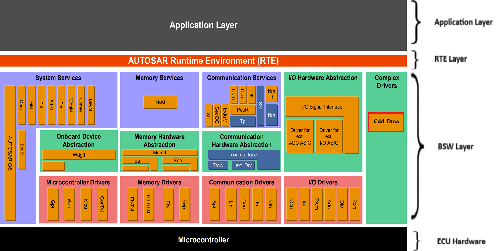
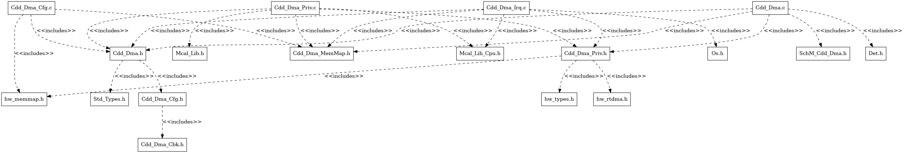
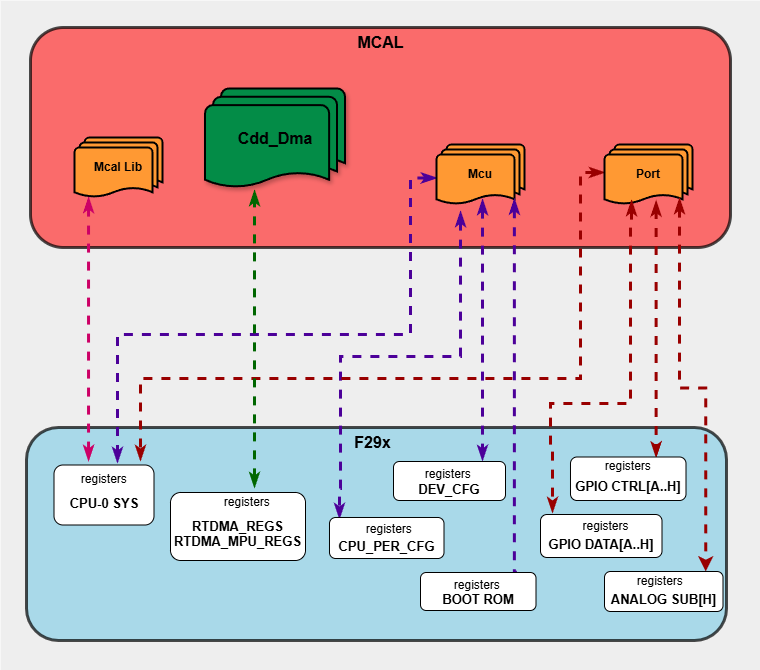

5.12. CDD DMA Module
5.12.1. Acronyms and Definitions
Abbreviation/Term |
Explanation |
|---|---|
AUTOSAR |
Automotive Open System Architecture |
CDD |
Complex Device Driver |
DMA |
Direct Memory Access |
RTDMA |
Real-Time Direct Memory Access |
API |
Application Programming Interface |
DET |
Default Error Tracer |
MPU |
Memory Protection Unit |
ESM |
Error Signaling Module |
SSU |
Safety and Security Unit |
HW |
Hardware |
SW |
Software |
5.12.2. Introduction
The CDD DMA driver is a Complex Device Driver that provides a hardware method of transferring data between peripherals and/or memory without intervention from the CPU.

Fig. 5.43 Cdd Dma MCAL AUTOSAR
This document details AUTOSAR Cdd DMA module implementation
Supported AUTOSAR Release |
4.3.1 |
|---|---|
Supported Configuration Variants |
Pre-Compile |
Vendor ID |
CDD_DMA_VENDOR_ID (44) |
Module ID |
CDD_DMA_MODULE_ID (255) |
5.12.3. Functional Overview
The CDD DMA driver is part of the Complex Device Driver layer (CDD). The RTDMA provides a hardware method of transferring data between peripherals and/or memory without CPU intervention.
The RTDMA operates as a state machine with two nested loops that control data transfers:
5.12.3.1. Burst and Transfer Loops
The RTDMA uses a two-level nested loop structure to manage data transfers:
Burst Loop (Inner Loop): The inner loop transfers a configured number of words (bytes) called a “burst”. The burst size is specified by the BURST_SIZE and represents the smallest amount of data transferred at one time.
Transfer Loop (Outer Loop): The outer loop repeats the burst operation for a configured number of times called “transfers”. The transfer size is specified by the TRANSFER_SIZE.
Transfer Process:
A DMA transfer is initiated by a peripheral or software trigger
The inner burst loop executes, transferring the configured burst size
After completing one burst, the next burst begins (if more transfers are pending)
This continues until all configured transfers are complete
Upon completion, a user-configurable notification callback can be invoked. The notification timing can be configured to trigger either at the beginning of a new transfer or at the end of the complete transfer.
5.12.3.2. Operating Modes
One-Shot Mode:
When enabled: After the first trigger event, the DMA continuously transfers data in bursts until all configured transfers are complete
When disabled: A separate trigger event is required for each burst transfer, continuing until all configured transfers are complete
Warning
One-shot mode must not be used with Priority 0 channels. When one-shot mode is enabled, a single trigger can consume the majority of RTDMA bandwidth, potentially causing long CPU stalls as the DMA continuously processes bursts without allowing other channels to execute. This is especially problematic with Priority 0 channels, which can interrupt other ongoing transfers.
Recommendation: Configure a CPU timer (or similar periodic trigger) and disable one-shot mode to ensure controlled, time-sliced DMA operation that prevents bandwidth monopolization and CPU stalls.
Continuous Mode:
When enabled: The RTDMA keeps the channel active even after all bursts in the transfer loop are complete. The channel remains ready to process the next transfer automatically
When disabled: The RTDMA disables the channel after all bursts in the transfer loop are complete. The channel stops and must be re-enabled before another transfer can be started
Note
One-shot mode and continuous mode are independent settings and can be enabled or disabled separately. Each mode controls a different aspect of the transfer behavior:
One-shot mode controls whether multiple bursts execute from a single trigger
Continuous mode controls whether the channel remains active after completing all transfers
5.12.3.3. Channel Priority
The RTDMA supports software-configurable priority levels for efficient channel arbitration:
Round Robin Mode:
All channels have equal priority
Each enabled channel is serviced in round-robin fashion: CH1 → CH2 → CH3 → … → CH10 → CH1
After each channel transfers a burst, the next channel is serviced
Software-Configurable Priority (0-3):
Each channel can be assigned a priority level from 0 to 3
Default priority for all channels is 1
Lower priority number = higher priority during arbitration
When multiple channels have the same priority, the lowest channel number wins arbitration
Priority 0 (Highest Priority):
Channels configured with priority 0 are considered a special case and can interrupt the RTDMA state machine
When a Priority 0 event occurs, the current word transfer on any other channel completes, then execution halts
The Priority 0 channel is then serviced for its complete burst
After the Priority 0 channel burst is complete, execution returns to the channel that was active when the Priority 0 event occurred
Typically used for time-critical peripherals
5.12.3.4. Overrun Detection
The RTDMA includes overrun detection logic to identify when trigger events are lost:
When a burst for a channel starts, the peripheral interrupt flag is cleared
If an additional event trigger arrives between the time the flag is set and cleared by the burst start, the second trigger is lost
This overrun condition is detected and flagged by the RTDMA
Users can configure overrun notification to receive a callback when an overrun condition occurs.
5.12.3.5. Memory Protection Unit (MPU)
The RTDMA includes an integrated MPU for access protection and security:
MPU Features:
Monitors DMA read/write interface buses continuously
Detect errors, block access, and trigger an interrupt on any violations
Supports up to 16 configurable memory regions
Each region defines start and end addresses for read/write access permissions
Channel-to-MPU mapping is orthogonal - each channel can be enabled in multiple MPU regions and vice versa
MPU Operation:
When MPU is enabled, faults are communicated to the Error Signaling Module (ESM)
MPU checks if an address belongs to any defined region
MPU verifies that accesses have necessary permissions for the region
Access violations result in blocked transactions and error reporting to Error Signaling Module (ESM)
5.12.4. Hardware Features
5.12.4.1. Hardware Features Supported
Features supported at a high level are:
10 RTDMA channels with software configurable priority levels and independent Interrupt Controller interrupts
Up to 256 hardware trigger sources to initiate RTDMA transfers
Internal trigger generation for data transfers and trigger sources for channels
Independent Read and Write buses
Word Size: 8-bit, 16-bit, 32-bit, and 64-bit transfers
Throughput: 1 cycle/word after the initial read-write access with 0 cycle read/write stall
FIFO implemented within hardware to optimize data transfers
Linear and circular addressing modes
Support for multiple data transformation functions as data is transferred from source to destination
Ability to reverse words, half words, and so on
Access protection through the Memory Protection Unit (MPU)
5.12.4.2. Not supported Features
Burst Mode Support for transfers with EMIF, since EMIF is not available on automotive devices
5.12.4.3. Non compliance
None
5.12.5. Source files
📦f29h85x_mcal
┣ 📂build
┣ 📂docs
┣ 📂drivers
┃ ┣ 📂BSW_Stubs
┃ ┣ 📂Adc
┃ ┣ 📂Can
┃ ┗ 📂Cdd_Dma
┃ ┃ ┣ 📂include
┃ ┃ ┃ ┣ 📜Cdd_Dma.h : Contains the API declarations of the Cdd DMA driver to be used by upper layers.
┃ ┃ ┃ ┗ 📜Cdd_Dma_Priv.h : Contains data structures and Internal function declarations.
┃ ┃ ┣ 📂src
┃ ┃ ┃ ┣ 📜Cdd_Dma.c : Contains the implementation of the API for Cdd DMA driver.
┃ ┃ ┃ ┣ 📜Cdd_Dma_Irq.c : Contains the ISR implementation.
┃ ┃ ┃ ┗ 📜Cdd_Dma_Priv.c : Contains Functions that support the API for Cdd DMA driver
┃ ┃ ┗ 📜CMakeLists.txt
┃ ┣ 📂Dio
┃ ┣ 📂Gpt
┃ ┣ 📂hw_include
┃ ┣ 📂Mcal_Lib
┃ ┣ 📂Mcu
┃ ┣ 📂Port
┃ ┣ 📂Spi
┃ ┗ 📂Wdg
┣ 📂examples
┣ 📂plugins
┣ 📜CMakeLists.txt
┗ 📜CMakePresets.json

Fig. 5.44 Cdd DMA Header File Structure
5.12.6. Module requirements
5.12.6.1. Memory Mapping
The driver follows the AUTOSAR memory mapping strategy. All memory sections should be stored in memory as per AUTOSAR specifications, considering initialization policy, alignment requirements, safety classification, and core scope where applicable.
Reference memory map files can be found at:
{MCAL_INSTALL_PATH}\drivers\BSW_Stubs\MemMap\include
The memory sections are organized according to AUTOSAR specifications to ensure proper placement of code and data in different memory regions based on their usage and access patterns.
5.12.6.2. Scheduling
None
5.12.6.3. Error handling
5.12.6.3.1. Development Error Reporting
Development errors are reported to the DET using the service Det_ReportError(), when enabled. The driver interface contains the MACRO declaration of the error codes to be returned.
5.12.6.4. Error codes
Type of Error |
Related Error code |
Value (Hex) |
|---|---|---|
API service used without module initialization |
CDD_DMA_E_UNINIT |
0x0A |
API called for reinitialization of already initialized DMA driver |
CDD_DMA_E_ALREADY_INITIALIZED |
0x0B |
Initialization API failed |
CDD_DMA_E_INIT_FAILED |
0x0C |
API service called with invalid parameter pointer |
CDD_DMA_E_PARAM_POINTER |
0x0D |
API service called with invalid parameter value |
CDD_DMA_E_PARAM_VALUE |
0x0E |
API service called during ongoing process |
CDD_DMA_E_BUSY |
0x0F |
API service called to force or clear peripheral event trigger when peripheral event trigger is disabled |
CDD_DMA_E_PERIPHERAL_EVENT_TRIGGER_DISABLED |
0x10 |
API service called to enable peripheral event trigger when peripheral event trigger is already enabled |
CDD_DMA_E_PERIPHERAL_EVENT_TRIGGER_ENABLED |
0x11 |
API service called to start a channel when the channel is already running |
CDD_DMA_E_ALREADY_RUNNING |
0x12 |
API service called to halt a channel when the channel already halted |
CDD_DMA_E_ALREADY_HALTED |
0x13 |
API service called to modify DMA configurable properties when DMA configurable properties are committed |
CDD_DMA_E_DMACFG_COMMITTED |
0x14 |
API service called to modify DMA channel properties when DMA channel properties are committed |
CDD_DMA_E_CHCFG_COMMITTED |
0x15 |
API service called to modify DMA MPU region properties when DMA MPU region properties are committed |
CDD_DMA_E_MPUR_COMMITTED |
0x16 |
API service called to enable or disable MPU when DMA MPU configuration are committed |
CDD_DMA_E_MPUCFG_COMMITTED |
0x17 |
API service called to clear error flag when no overflow is detected |
CDD_DMA_E_NO_OVERFLOW |
0x18 |
API service called to clear peripheral event trigger when no event trigger exists |
CDD_DMA_E_NO_TRIGGER |
0x19 |
5.12.7. Used resources
5.12.7.1. Interrupt Handling
Each RTDMA channel has its own independent Interrupt Controller interrupt for CPU servicing. The DMA can generate interrupts at the completion of a transfer, at the beginning of the transfer process and during overrun detection. These interrupts allow the CPU to be notified of transfer completion or errors without polling.
The Driver doesn’t register any interrupts handler (ISR), it’s expected that consumer of this driver registers the required interrupt handler.
For every RTDMA channel, an ISR requires to be registered if Channel notification is enabled. The Interrupt number associated with RTDMA channel is detailed in TRM (also, please refer the Example application). Interrupt category should be selected in the Cdd_Dma plugin.
Cdd Dma Instance |
Interrupt Name |
Interrupt handler |
|---|---|---|
RTDMA1 |
RTDMA1_CH1INT |
Cdd_Dma_RTDMA1_CH1_Isr |
RTDMA1 |
RTDMA1_CH2INT |
Cdd_Dma_RTDMA1_CH2_Isr |
RTDMA1 |
RTDMA1_CH3INT |
Cdd_Dma_RTDMA1_CH3_Isr |
RTDMA1 |
RTDMA1_CH4INT |
Cdd_Dma_RTDMA1_CH4_Isr |
RTDMA1 |
RTDMA1_CH5INT |
Cdd_Dma_RTDMA1_CH5_Isr |
RTDMA1 |
RTDMA1_CH6INT |
Cdd_Dma_RTDMA1_CH6_Isr |
RTDMA1 |
RTDMA1_CH7INT |
Cdd_Dma_RTDMA1_CH7_Isr |
RTDMA1 |
RTDMA1_CH8INT |
Cdd_Dma_RTDMA1_CH8_Isr |
RTDMA1 |
RTDMA1_CH9INT |
Cdd_Dma_RTDMA1_CH9_Isr |
RTDMA1 |
RTDMA1_CH10INT |
Cdd_Dma_RTDMA1_CH10_Isr |
RTDMA2 |
RTDMA2_CH1INT |
Cdd_Dma_RTDMA2_CH1_Isr |
RTDMA2 |
RTDMA2_CH2INT |
Cdd_Dma_RTDMA2_CH2_Isr |
RTDMA2 |
RTDMA2_CH3INT |
Cdd_Dma_RTDMA2_CH3_Isr |
RTDMA2 |
RTDMA2_CH4INT |
Cdd_Dma_RTDMA2_CH4_Isr |
RTDMA2 |
RTDMA2_CH5INT |
Cdd_Dma_RTDMA2_CH5_Isr |
RTDMA2 |
RTDMA2_CH6INT |
Cdd_Dma_RTDMA2_CH6_Isr |
RTDMA2 |
RTDMA2_CH7INT |
Cdd_Dma_RTDMA2_CH7_Isr |
RTDMA2 |
RTDMA2_CH8INT |
Cdd_Dma_RTDMA2_CH8_Isr |
RTDMA2 |
RTDMA2_CH9INT |
Cdd_Dma_RTDMA2_CH9_Isr |
RTDMA2 |
RTDMA2_CH10INT |
Cdd_Dma_RTDMA2_CH10_Isr |
5.12.7.2. Instance support
CPU instances |
supported |
|---|---|
CPU 1 |
YES |
CPU 2 |
NO |
CPU 3 |
NO |
5.12.7.3. Hardware-Software Mapping
Below image shows Cdd DMA driver Hardware-Software mapping. For more information related to HW/SW mapping, refer the F29x Reference Manual.
{kind=link}

Fig. 5.45 Cdd DMA HW/SW Mapping
5.12.8. Integration description
5.12.8.1. Dependent modules
5.12.8.1.1. DET
This implementation depends on the DET in order to report development errors. The detection of development errors is configurable (ON / OFF). The switch CDD_DMA_DEV_ERROR_DETECT will activate or deactivate the detection of all development errors.
5.12.8.1.2. MCU
MCU Module is required to initialize all the clocks to be used by different peripherals including the RTDMA module.
5.12.8.2. Resource Allocator
The CDD DMA module uses the Resource Allocator to allocate RTDMA peripheral instances and channels to CPU cores and configure their memory-mapped base addresses and global properties. Each allocation is placed inside a Context that maps to a CPU core (e.g. CPU1). The CurrentContext parameter in the Resource Allocator selects which Context is active for MCAL execution. See the Resource Allocator Module User Guide for details on configuring device-specific settings.
The Frame parameter (FRAME0–FRAME3) selects the memory-mapped frame for the instance, enabling simultaneous access from different initiators without arbitration stalls. The BaseAddr is auto-calculated based on the selected instance, channel, and frame. Additional global RTDMA properties including priority schemes, emulation mode, channel priorities, and MPU configuration are also configured through the Resource Allocator.
5.12.8.2.1. Why Global-Level Configuration is Necessary
The F29 device architecture requires certain RTDMA configuration registers to be writable only by CPU1. These include:
Priority Scheme (Round-robin vs. Software-configured)
Emulation Mode (Stop vs. Free-run during debug halt)
Channel Priorities (Priority levels 0-3 for each channel)
MPU Configuration (Memory Protection Unit regions and permissions)
When SDK RTDMA is used on CPU2 or CPU3, these cores cannot directly configure the above global properties due to hardware write restrictions. Therefore, the Resource Allocator provides a centralized global configuration mechanism where:
CPU1 configures all global DMA properties in the Resource Allocator
Individual channels are then allocated to different CPU contexts (CPU1, CPU2, CPU3)
Each CPU context can configure channel-specific properties (source/destination addresses, transfer sizes, triggers, etc.)
This separation ensures that global hardware settings are properly initialized by CPU1 through the Resource Allocator, while each CPU can independently manage its allocated channels for data transfers using the appropriate driver interface.
5.12.8.2.2. Configuration Architecture
The DMA channel allocation follows a two-level hierarchical structure:
Global Cdd_Dma Configuration Level (
ResourceAllocatorGeneral/Cdd_Dma): Defines available hardware instances, their global properties, and channelsCPU Context Configuration Level (
ResourceAllocatorGeneral/Context/Cdd_Dma): Allocates specific channels from the global pool to individual CPU contexts
5.12.8.2.3. Resource Allocator Usage Example
To allocate RTDMA1 Channel 1 to CPU1 using FRAME0:
5.12.8.2.3.1. Step 1: Global Cdd_Dma Configuration (CPU1-Only Writable Settings)
At the global level (ResourceAllocatorGeneral/Cdd_Dma), configure the RTDMA hardware instance and its global properties. These settings must be configured here because they are only writable by CPU1:
Create a new
CddDmaHwInstance(e.g., RTDMA1)Set InstanceName to
RTDMA1orRTDMA2Set Frame to
FRAME0,FRAME1,FRAME2, orFRAME3(applies to all channels in this instance)Configure CddDmaPriorityScheme:
CDD_DMA_PRIORITY_ROUND_ROBIN: All channels have equal priority, serviced sequentiallyCDD_DMA_PRIORITY_SOFTWARE_CONFIG: Channels use priority levels (0-3) configured per channel
Configure CddDmaEmulationMode:
CDD_DMA_EMULATION_STOP: DMA halts during debugger breakpointsCDD_DMA_EMULATION_FREE_RUN: DMA continues running during debugger breakpoints
Configure CddDmaMpuEnable (true/false) to enable Memory Protection Unit
If MPU is enabled, configure CddDmaMpuRegion containers:
Set CddDmaMpuRegionId (MPU1-MPU16)
Set CddDmaMpuStartAddress and CddDmaMpuEndAddress (4KB aligned)
Set CddDmaMpuAccessPermission (NO_ACCESS, READ_ACCESS, or READ_WRITE_ACCESS)
Add CddDmaMpuChannelEnable references to channels that can access this region
Add
CddDmaChannelcontainers for each channel you want to make available (CH1, CH2, …, CH10)For each channel:
Set ChannelName (CH1, CH2, …, CH10)
Set CddDmaChannelPriority (0-3, only used if priority scheme is SOFTWARE_CONFIG)
The BaseAddr will be automatically calculated (e.g.,
RTDMA1CH1_BASE_FRAME(0U))
ResourceAllocatorGeneral
└── Cdd_Dma
└── CddDmaHwInstance_RTDMA1
├── InstanceName: RTDMA1
├── Frame: FRAME0
├── CddDmaPriorityScheme: Software-configured
├── CddDmaEmulationMode: Free-run
└── CddDmaChannel_CH1
├── ChannelName: CH1
├── BaseAddr: RTDMA1CH1_BASE_FRAME(0U) [auto-calculated]
└── CddDmaChannelPriority: 1
Important Constraints:
All channels within a single RTDMA hardware instance must share the same frame selection. The frame is configured at the
CddDmaHwInstancelevel, not at the individual channel level.Global properties (priority scheme, emulation mode, channel priorities, MPU settings) are hardware instance-level settings and apply to all channels in that instance regardless of which CPU context they are allocated to.
5.12.8.2.3.2. Step 2: Context-Specific Channel Allocation
After defining channels in the global configuration, allocate them to specific CPU contexts:
In the Resource Allocator configuration, navigate to the desired Context (e.g., CPU1_Context)
Under
Context/Cdd_Dma, create a newCddDmaAllocatedChannelSet ChannelRef to reference the global channel (e.g.,
/ResourceAllocatorGeneral/Cdd_Dma/CddDmaHwInstance_RTDMA1/CddDmaChannel_CH1)
ResourceAllocatorGeneral
└── Context (Core: CPU1)
└── Cdd_Dma
└── CddDmaAllocatedChannel
└── ChannelRef: /ResourceAllocatorGeneral/Cdd_Dma/
CddDmaHwInstance_RTDMA1/CddDmaChannel_CH1
Key Points:
Each
CddDmaHwInstancerepresents a physical RTDMA peripheral (RTDMA1 or RTDMA2)A channel can only be allocated to one CPU context (enforced by uniqueness validation)
Only channels allocated to a context can be used by that context’s software
Once channels are allocated to a CPU context in the Resource Allocator, they are referenced in the Cdd_Dma module configuration
5.12.8.2.4. Multi-Core Usage Scenarios
5.12.8.2.4.1. Scenario 1: CPU1 using Cdd_Dma (AUTOSAR MCAL)
CPU1 configures global DMA properties in Resource Allocator (priority scheme, emulation mode, channel priorities, MPU)
Resource Allocator allocates channels to CPU1_Context
CPU1 calls
Cdd_Dma_Init()to configure global DMA properties and initialize the driverCPU1 uses Cdd_Dma APIs to configure channel-specific properties and perform transfers
5.12.8.2.4.2. Scenario 2: Mixed Usage (CPU1 with Cdd_Dma, CPU2/CPU3 with SDK RTDMA)
CPU1 configures global DMA properties for both RTDMA1 and RTDMA2 in Resource Allocator
Resource Allocator allocates RTDMA channels to CPU1_Context
Resource Allocator allocates RTDMA channels to CPU2_Context or CPU3_Context
CPU1 calls
Cdd_Dma_Init()to configure global DMA properties and initialize the driverCPU1 uses Cdd_Dma APIs for it’s channels
CPU2/CPU3 uses SDK RTDMA APIs for it’s channels
All CPUs operate independently on their allocated channels, but share the same global configuration set by CPU1
5.12.8.2.4.3. Scenario 3: CPU2/CPU3 using only SDK RTDMA
CPU1 configures global DMA properties for RTDMA instances in Resource Allocator (priority scheme, emulation mode, channel priorities, MPU)
Resource Allocator allocates RTDMA channels to CPU2_Context or CPU3_Context
CPU1 calls
Cdd_Dma_Init()to configure global settings (even though CPU1 doesn’t use any DMA channels)CPU2/CPU3 uses SDK RTDMA APIs for their allocated channels
This scenario requires
Cdd_Dma_Init()on CPU1 to properly configure the global hardware settings that are only writable by CPU1
5.12.9. Configuration
The Cdd DMA Driver implementation supports single configuration variants, namely Pre-Compile config. The driver expects generated Cdd_Dma_Cfg.h to be present as input file. The associated Cdd DMA driver configuration generated source file is Cdd_Dma_Cfg.c.
The generated configuration files should not be modified manually. The config tool Elektrobit Tresos should be used to modify the configuration files.
Note
Refer section Getting Started with EB Tresos of Chapter MCAL Configuration and EB Tresos for more information on how to load plugin and generate the configuration files.
5.12.9.1. Configuration Parameters
5.12.9.1.1. CddDmaGeneral
Contains the general configuration parameters of the CDD DMA module.
5.12.9.1.1.1. CddDmaLockConfigurations
Item |
|
|---|---|
Name |
CddDmaLockConfigurations |
Description |
Enables locking of DMA configuration registers to prevent accidental modification during runtime. When enabled (true), the DMA configuration registers are write-protected after initialization. |
Origin |
Texas Instruments |
Post-Build-Variant-Value |
false |
Value-Configuration-Class |
– |
Pre-Compile-Time |
VARIANT-PRE-COMPILE |
Default-value |
false |
5.12.9.1.1.2. CddDmaDevErrorDetect
Item |
|
|---|---|
Name |
CddDmaDevErrorDetect |
Description |
Switches the development error detection and notification on or off. |
Origin |
Texas Instruments |
Post-Build-Variant-Value |
false |
Value-Configuration-Class |
– |
Pre-Compile-Time |
VARIANT-PRE-COMPILE |
Default-value |
false |
5.12.9.1.1.3. CddDmaVersionInfoApi
Item |
|
|---|---|
Name |
CddDmaVersionInfoApi |
Description |
Enables or disables the Cdd_Dma_GetVersionInfo() API. |
Origin |
Texas Instruments |
Post-Build-Variant-Value |
false |
Value-Configuration-Class |
– |
Pre-Compile-Time |
VARIANT-PRE-COMPILE |
Default-value |
false |
5.12.9.1.2. CddDmaConfig
This container contains the configuration parameters and sub containers of the Cdd_Dma module.
5.12.9.1.2.1. CddDmaChannel
This container contains the driver configuration for the DMA channel.
5.12.9.1.2.2. CddDmaInstance
Item |
|
|---|---|
Name |
CddDmaInstance |
Description |
DMA instance ID derived from the selected channel reference. This is a non-editable parameter automatically populated based on CddDmaChannelRef. |
Origin |
Texas Instruments |
Post-Build-Variant-Value |
false |
Value-Configuration-Class |
– |
Pre-Compile-Time |
VARIANT-PRE-COMPILE |
Default-value |
RTDMA1 |
Range |
RTDMA1 |
5.12.9.1.2.3. CddDmaChannel
Item |
|
|---|---|
Name |
CddDmaChannel |
Description |
DMA channel ID derived from the selected channel reference. This is a non-editable parameter automatically populated based on CddDmaChannelRef. |
Origin |
Texas Instruments |
Post-Build-Variant-Value |
false |
Value-Configuration-Class |
– |
Pre-Compile-Time |
VARIANT-PRE-COMPILE |
Default-value |
CH1 |
Range |
CH1 |
5.12.9.1.2.4. CddDmaInterruptCategory
Item |
|
|---|---|
Name |
CddDmaInterruptCategory |
Description |
This parameters defines the category of the interrupt. |
Origin |
Texas Instruments |
Post-Build-Variant-Value |
false |
Value-Configuration-Class |
– |
Pre-Compile-Time |
VARIANT-PRE-COMPILE |
Default-value |
ISR_CAT1_RTINT |
Range |
ISR_CAT1_INT |
5.12.9.1.2.5. CddDmaChIntNotification
Item |
|
|---|---|
Name |
CddDmaChIntNotification |
Description |
Interrupt notification function for transfer |
Multiplicity-Configuration-Class |
– |
Pre-Compile Time |
VARIANT-PRE-COMPILE |
Origin |
Texas Instruments |
Post-build-variant-multiplicity |
false |
Post-Build-Variant-Value |
false |
Value-Configuration-Class |
– |
Pre-Compile-Time |
VARIANT-PRE-COMPILE |
Default-value |
NULL_PTR |
5.12.9.1.2.6. CddDmaOverflowIntNotification
Item |
|
|---|---|
Name |
CddDmaOverflowIntNotification |
Description |
Overflow Interrupt notification function |
Multiplicity-Configuration-Class |
– |
Pre-Compile Time |
VARIANT-PRE-COMPILE |
Origin |
Texas Instruments |
Post-build-variant-multiplicity |
false |
Post-Build-Variant-Value |
false |
Value-Configuration-Class |
– |
Pre-Compile-Time |
VARIANT-PRE-COMPILE |
Default-value |
NULL_PTR |
5.12.9.1.2.7. CddDmaChannelRef
Item |
|
|---|---|
Name |
CddDmaChannelRef |
Description |
Reference to the RTDMA channel from the Resource Allocator. This links the configuration to a specific DMA channel available on the device. |
Origin |
Texas Instruments |
Post-Build-Variant-Value |
false |
Value-Configuration-Class |
– |
Pre-Compile-Time |
VARIANT-PRE-COMPILE |
5.12.9.2. Steps To Configure Cdd DMA Module
Open EB Tresos configurator tool.
Ensure DMA channels have been allocated to the CPU context in the Resource Allocator module (see Resource Allocator section for details on channel allocation).
Navigate to the Cdd_Dma module configuration.
For each DMA channel to be used, create a
CddDmaChannelcontainer.Within each
CddDmaChannelcontainer, configure the following parameters:CddDmaChannelRef: Reference to the allocated channel from the Resource Allocator path (
ResourceAllocatorGeneral/Context/Cdd_Dma/CddDmaAllocatedChannel). This links the Cdd_Dma channel configuration to the channel allocated in the Resource Allocator.CddDmaInterruptCategory: Select the interrupt category for the channel:
ISR_CAT1_INTISR_CAT1_RTINTISR_CAT2_INT
CddDmaChIntNotification: Specify the callback function name to be invoked when a DMA transfer completes on this channel.
CddDmaOverflowIntNotification: Specify the callback function name to be invoked when a DMA overflow interrupt occurs on this channel.\
Save the configuration and generate the configuration files.
Note
Global configuration parameters such as channel ID, priority scheme, priorities, emulation mode and MPU configuration are managed in the Resource Allocator module, not in the Cdd_Dma module.
5.12.10. Examples
The example applications demonstrate use of the Cdd_Dma module. The examples are explained below in detail.
5.12.10.1. Cdd_Dma_Example_Mem_Transfer
5.12.10.1.1. Overview of Cdd_Dma_Example_Mem_Transfer
This example demonstrates basic memory-to-memory DMA transfer functionality:
Initialization
EcuM_Init()Initializes clock to 200 MHz usingMcu_Init()Cdd_Dma_Init()initializes DMA driver with EB Tresos configurationCdd_Dma_GetVersionInfo()retrieves software version information (vendor ID, module ID, SW version)
Transfer Configuration
Configures DMA channel properties using
Cdd_Dma_SetChannelProperties():Software trigger mode (
CDD_DMA_TRIGGER_SOFTWARE)Continuous mode enabled
32-bit data size for read and write operations
Channel interrupt enabled at end of transfer
Overflow interrupt disabled
Configures transfer parameters using
Cdd_Dma_SetTransferProperties():Burst size: 4 words (32-bit each)
Transfer size: 16 bursts (total 64 words = 256 bytes)
Source and destination step sizes: 4 bytes per word
No address wrapping (wrap size set to maximum 65535)
Source address:
TxDatabufferDestination address:
RxDatabuffer
Transfer Execution
Starts DMA channel using
Cdd_Dma_StartChannelTransfer()Triggers each burst individually using
Cdd_Dma_ForcePeripheralEventTrigger()Monitors burst status using
Cdd_Dma_GetChannelStatus()to wait for burst completionVerifies data integrity after each burst by comparing transmitted and received data
Receives interrupt notification via
Cdd_Dma_Channel1_notification()callback when entire transfer completesStops DMA channel using
Cdd_Dma_StopChannelTransfer()Reports transfer success or failure based on data verification
5.12.10.1.2. Sample Log of Cdd_Dma_Example_Mem_Transfer
Executing Cdd_Dma_Example_Mem_Transfer example
---------------------------------------------------------------
CDD DMA MCAL Version Info
---------------------
Vendor ID : 44
Module ID : 255
SW Major Version : 1
SW Minor Version : 0
SW Patch Version : 0
---------------------------------------------------------------
Data at source before transfer:
0 1 2 3 4 5 6 7 8 9 10 11 12 13 14 15
Data at destination before transfer:
0 0 0 0 0 0 0 0 0 0 0 0 0 0 0 0
Data at source after transfer:
0 1 2 3 4 5 6 7 8 9 10 11 12 13 14 15
Data at destination after transfer:
0 1 2 3 4 5 6 7 8 9 10 11 12 13 14 15
===============================================
Transfer successful
5.12.10.2. Cdd_Dma_Example_Mem_Transfer_Mpu
5.12.10.2.1. Overview of Cdd_Dma_Example_Mem_Transfer_Mpu
This example demonstrates RTDMA Memory Protection Unit (MPU) functionality by intentionally triggering an MPU violation:
Initialization
EcuM_Init()Initializes clock to 200 MHz usingMcu_Init()Cdd_Dma_Init()initializes DMA driver with EB Tresos configurationCdd_Dma_GetVersionInfo()retrieves software version information (vendor ID, module ID, SW version)
MPU Configuration
Configures MPU region with specific address range:
MPU Region Start Address: 0x200E0000
MPU Region End Address: 0x200E0FFF
Places transmit buffer (
TxData) at 0x200E0100 (within MPU region)Places receive buffer (
RxData) at 0x200E0FDC (intentionally extends outside MPU region to 0x200E101B)This configuration intentionally causes MPU violation when DMA attempts to write to receive buffer
ESM and NMI Setup
Registers custom NMI handler
CPU1_Custom_NMIHandler()Configures Error Signaling Module (ESM)
Transfer Configuration
Configures DMA channel properties using
Cdd_Dma_SetChannelProperties():Software trigger mode (
CDD_DMA_TRIGGER_SOFTWARE)Continuous mode enabled
32-bit data size for read and write operations
Channel interrupt enabled at end of transfer
Overflow interrupt disabled
Configures transfer parameters using
Cdd_Dma_SetTransferProperties():Burst size: 4 words (32-bit each)
Transfer size: 16 bursts (total 64 words = 256 bytes)
Source and destination step sizes: 4 bytes per word
No address wrapping (wrap size set to maximum 65535)
Source address:
TxDatabufferDestination address:
RxDatabuffer
When DMA attempts to write to receive buffer outside MPU region:
MPU detects security violation
MPU signals Error Aggregator module
Error Aggregator communicates fault to ESM
ESM triggers NMI interrupt and blocks RTDMA access
NMI handler increments
g_nmiCountcounterVerifies NMI was triggered as expected, confirming MPU protection is functioning correctly
Reports pass if NMI occurred within timeout, fail otherwise
5.12.10.2.2. Sample Log of Cdd_Dma_Example_Mem_Transfer_Mpu
Executing Cdd_Dma_Example_Mem_Transfer_Mpu example
---------------------------------------------------------------
CDD DMA MCAL Version Info
Vendor ID : 44
Module ID : 255
SW Major Version : 1
SW Minor Version : 0
SW Patch Version : 0
---------------------------------------------------------------
Starting DMA transfer...
Triggering DMA transfers (expecting MPU violation)...
---------------------------------------------------------------
Cdd_Dma_Example_Mem_Transfer_Mpu example passed - NMI was triggered as expected
---------------------------------------------------------------
5.12.10.3. Setup Required to Run Examples
Connect the hardware and power up
Connect UART setup to check the log on serial console
5.12.10.4. How to Run Examples
Open CCS and import the desired example (Cdd_Dma_Example_Mem_Transfer or Cdd_Dma_Example_Mem_Transfer_Mpu)
Build project and start debug session
Run the application and observe output on serial console
5.12.10.5. File Structure
📦f29h85x_mcal
┣ 📂build
┣ 📂docs
┣ 📂drivers
┣ 📂examples
┃ ┣ 📂AppUtils
┃ ┣ 📂Can
┃ ┣ 📂Cdd_Adc
┃ ┣ 📂Cdd_Dma
┃ ┃ ┣ 📂Cdd_Dma_Example_Mem_Transfer
┃ ┃ ┃ ┣ 📂Common
┃ ┃ ┃ ┃ ┗ 📂tresos
┃ ┃ ┃ ┃ ┗ 📂config
┃ ┃ ┃ ┃ ┣ 📜Cdd_Dma.xdm : Generated EB Tresos config file in .xdm format
┃ ┃ ┃ ┃ ┣ 📜Dem.xdm
┃ ┃ ┃ ┃ ┣ 📜EcuM.xdm
┃ ┃ ┃ ┃ ┣ 📜Mcu.xdm
┃ ┃ ┃ ┃ ┗ 📜Os.xdm
┃ ┃ ┃ ┣ 📂F29H85x
┃ ┃ ┃ ┃ ┣ 📂CCS
┃ ┃ ┃ ┃ ┃ ┗ 📜Cdd_Dma_Example_Mem_Transfer.projectspec
┃ ┃ ┃ ┃ ┗ 📂Cdd_Dma_Example_Mem_Transfer_Config
┃ ┃ ┃ ┃ ┣ 📂config
┃ ┃ ┃ ┃ ┃ ┣ 📜Port.xdm
┃ ┃ ┃ ┃ ┃ ┗ 📜ResourceAllocator.xdm
┃ ┃ ┃ ┃ ┣ 📂output
┃ ┃ ┃ ┃ ┃ ┣ 📂include
┃ ┃ ┃ ┃ ┃ ┃ ┣ 📜Cdd_Dma_Cfg.h : Contains the generated pre-compiler configuration header
┃ ┃ ┃ ┃ ┃ ┃ ┣ 📜Cdd_Dma_Cbk.h : Contains callback function declarations
┃ ┃ ┃ ┃ ┃ ┃ ┣ 📜Dem_Cfg.h
┃ ┃ ┃ ┃ ┃ ┃ ┣ 📜EcuM_Cfg.h
┃ ┃ ┃ ┃ ┃ ┃ ┣ 📜Mcu_Cfg.h
┃ ┃ ┃ ┃ ┃ ┃ ┣ 📜Os_Cfg.h
┃ ┃ ┃ ┃ ┃ ┃ ┗ 📜Port_Cfg.h
┃ ┃ ┃ ┃ ┃ ┣ 📂src
┃ ┃ ┃ ┃ ┃ ┃ ┣ 📜Cdd_Dma_Cfg.c : Contains the generated pre-compiler configuration source
┃ ┃ ┃ ┃ ┃ ┃ ┣ 📜Dem_Cfg.c
┃ ┃ ┃ ┃ ┃ ┃ ┣ 📜EcuM_Cfg.c
┃ ┃ ┃ ┃ ┃ ┃ ┣ 📜Mcu_PBcfg.c
┃ ┃ ┃ ┃ ┃ ┃ ┣ 📜Os_Cfg.c
┃ ┃ ┃ ┃ ┃ ┃ ┗ 📜Port_PBcfg.c
┃ ┃ ┃ ┃ ┃ ┗ 📂swcd
┃ ┃ ┃ ┃ ┃ ┣ 📜Cdd_Dma_BSWMD.arxml
┃ ┃ ┃ ┃ ┃ ┣ 📜Mcu_BSWMD.arxml
┃ ┃ ┃ ┃ ┃ ┗ 📜Port_BSWMD.arxml
┃ ┃ ┃ ┃ ┗ 📜CMakeLists.txt
┃ ┃ ┃ ┣ 📜CMakeLists.txt
┃ ┃ ┃ ┗ 📜Cdd_Dma_Example_Mem_Transfer.c : Example application for Cdd_Dma memory transfer
┃ ┃ ┗ 📂Cdd_Dma_Example_Mem_Transfer_Mpu
┃ ┃ ┣ 📂Common
┃ ┃ ┃ ┗ 📂tresos
┃ ┃ ┃ ┗ 📂config
┃ ┃ ┃ ┣ 📜Cdd_Dma.xdm : Generated EB Tresos config file in .xdm format
┃ ┃ ┃ ┣ 📜Dem.xdm
┃ ┃ ┃ ┣ 📜EcuM.xdm
┃ ┃ ┃ ┣ 📜Mcu.xdm
┃ ┃ ┃ ┗ 📜Os.xdm
┃ ┃ ┣ 📂F29H85x
┃ ┃ ┃ ┣ 📂CCS
┃ ┃ ┃ ┃ ┗ 📜Cdd_Dma_Example_Mem_Transfer_Mpu.projectspec
┃ ┃ ┃ ┗ 📂Cdd_Dma_Example_Mem_Transfer_Mpu_Config
┃ ┃ ┃ ┣ 📂config
┃ ┃ ┃ ┃ ┣ 📜Port.xdm
┃ ┃ ┃ ┃ ┗ 📜ResourceAllocator.xdm
┃ ┃ ┃ ┣ 📂output
┃ ┃ ┃ ┃ ┣ 📂include
┃ ┃ ┃ ┃ ┃ ┣ 📜Cdd_Dma_Cfg.h : Contains the generated pre-compiler configuration header
┃ ┃ ┃ ┃ ┃ ┣ 📜Cdd_Dma_Cbk.h : Contains callback function declarations
┃ ┃ ┃ ┃ ┃ ┣ 📜Dem_Cfg.h
┃ ┃ ┃ ┃ ┃ ┣ 📜EcuM_Cfg.h
┃ ┃ ┃ ┃ ┃ ┣ 📜Mcu_Cfg.h
┃ ┃ ┃ ┃ ┃ ┣ 📜Os_Cfg.h
┃ ┃ ┃ ┃ ┃ ┗ 📜Port_Cfg.h
┃ ┃ ┃ ┃ ┣ 📂src
┃ ┃ ┃ ┃ ┃ ┣ 📜Cdd_Dma_Cfg.c : Contains the generated pre-compiler configuration source
┃ ┃ ┃ ┃ ┃ ┣ 📜Dem_Cfg.c
┃ ┃ ┃ ┃ ┃ ┣ 📜EcuM_Cfg.c
┃ ┃ ┃ ┃ ┃ ┣ 📜Mcu_PBcfg.c
┃ ┃ ┃ ┃ ┃ ┣ 📜Os_Cfg.c
┃ ┃ ┃ ┃ ┃ ┗ 📜Port_PBcfg.c
┃ ┃ ┃ ┃ ┗ 📂swcd
┃ ┃ ┃ ┃ ┣ 📜Cdd_Dma_BSWMD.arxml
┃ ┃ ┃ ┃ ┣ 📜Mcu_BSWMD.arxml
┃ ┃ ┃ ┃ ┗ 📜Port_BSWMD.arxml
┃ ┃ ┃ ┗ 📜CMakeLists.txt
┃ ┃ ┣ 📜CMakeLists.txt
┃ ┃ ┗ 📜Cdd_Dma_Example_Mem_Transfer_Mpu.c : Example application for Cdd_Dma with MPU
┃ ┣ 📂Cdd_Ecap
┃ ┣ 📂Cdd_I2c
┃ ┣ 📂Cdd_Ipc
┃ ┣ 📂Cdd_Pwm
┃ ┣ 📂Cdd_Sent
┃ ┣ 📂Cdd_Uart
┃ ┣ 📂Cdd_Xbar
┃ ┣ 📂DeviceSupport
┃ ┣ 📂Dio
┃ ┣ 📂Empty_Projects
┃ ┣ 📂Fls
┃ ┣ 📂Fls_Fapi
┃ ┣ 📂Gpt
┃ ┣ 📂Lin
┃ ┣ 📂Mcu
┃ ┣ 📂Port
┃ ┣ 📂Rtdma
┃ ┣ 📂Spi
┃ ┣ 📂Wdg
┃ ┗ 📜CMakeLists.txt
┣ 📂plugins
┗ 📜CMakeLists.txt
┗ 📜CMakePresets.json